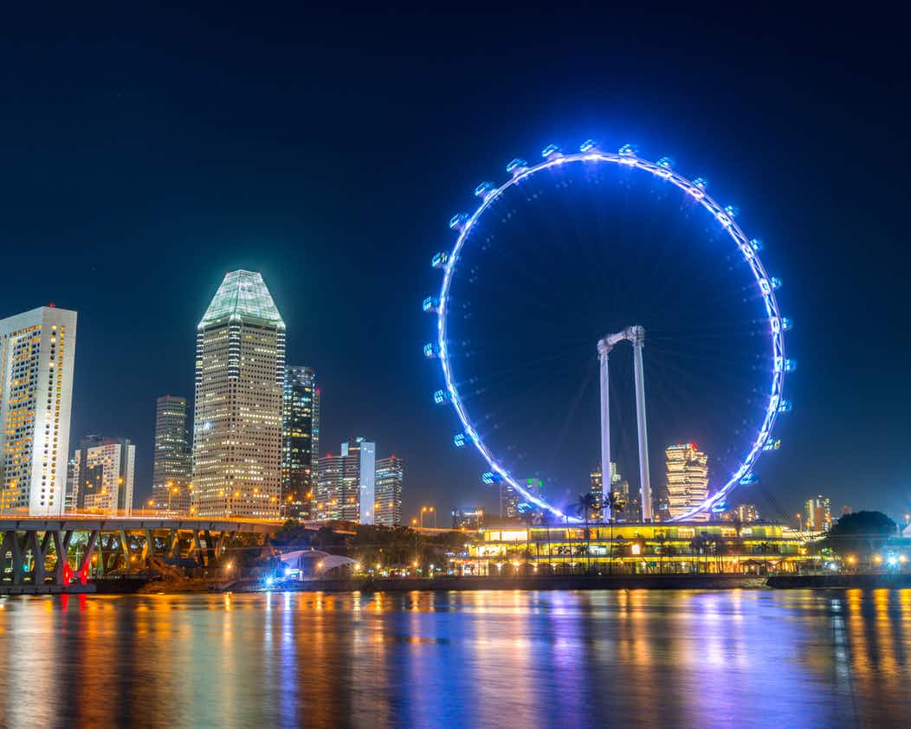
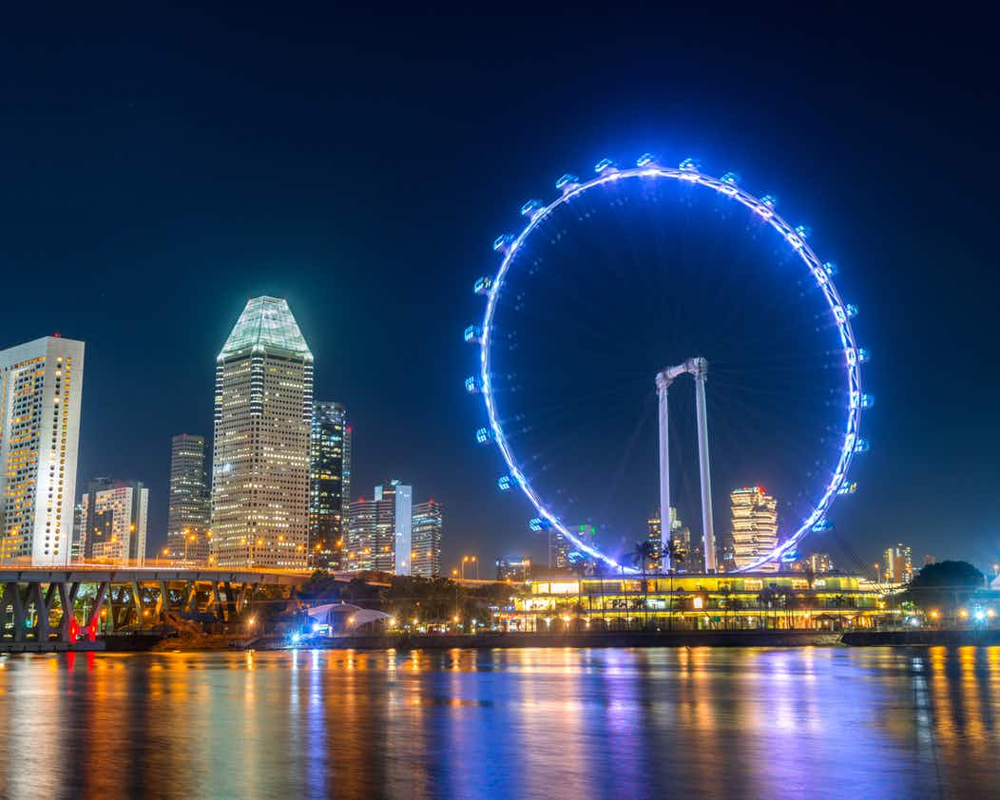

|  |
|  |
Standing at 165 metres above ground is Asia’s largest observation wheel, the Singapore Flyer. Launched in 2008, the wheel is a favourite tourist attraction due to its vantage point offering stunning panoramic views of Marina Bay and the city. Over the years, the Singapore Flyer has also become a significant feature in the backdrop of the FORMULA ONE Singapore Grand Prix Marina Bay Street Circuit.